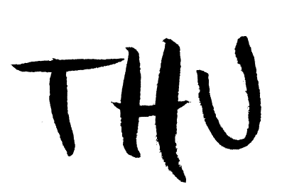

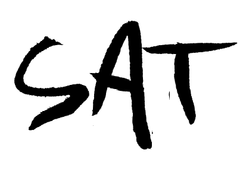
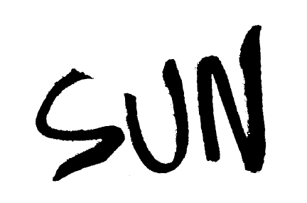
This webpage was developed for the 2019 Mills College MFA thesis concert, Signal Flow. The page features movable skteches, hand drawn by Jake Parker-Scott, and font by Matt Robidoux, and web development by Mitch Stahlmann
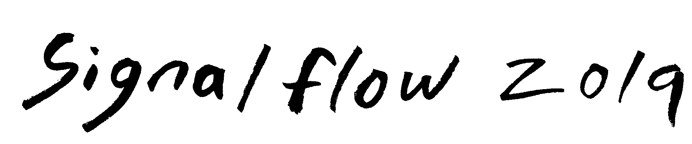
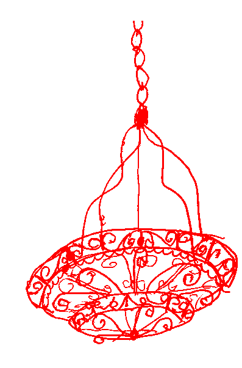
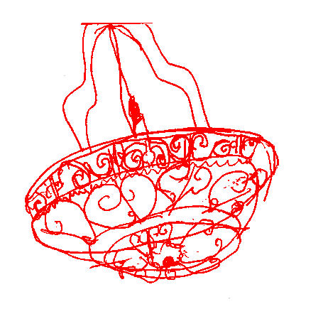
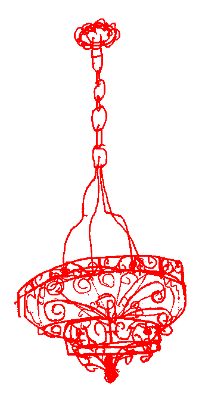
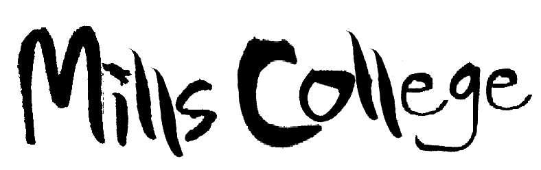
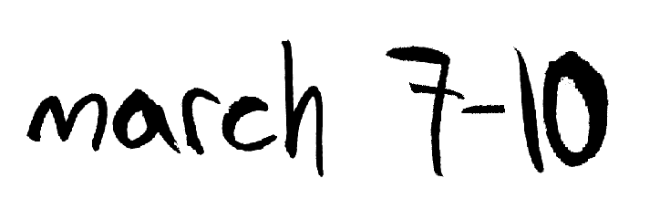
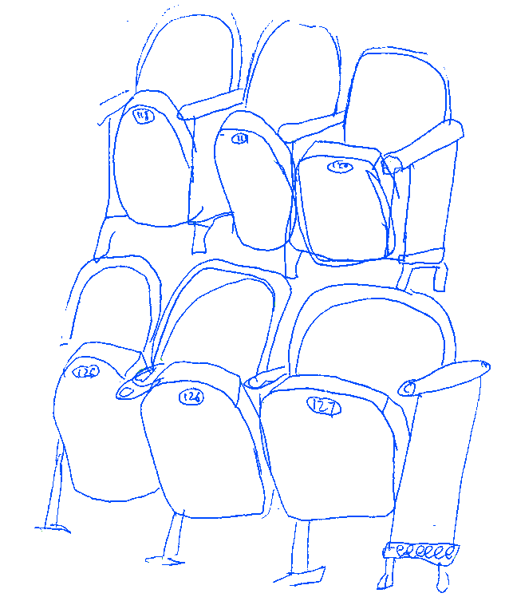
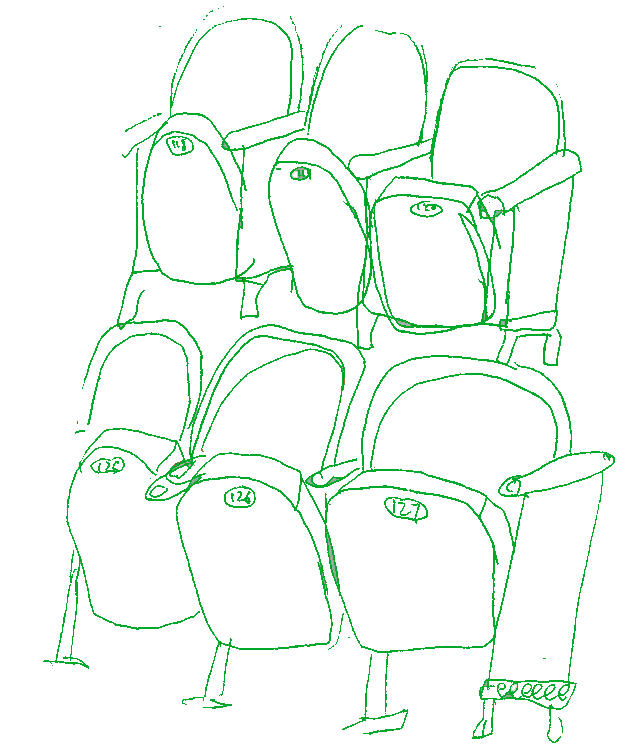
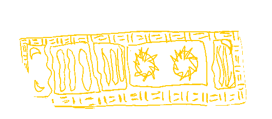
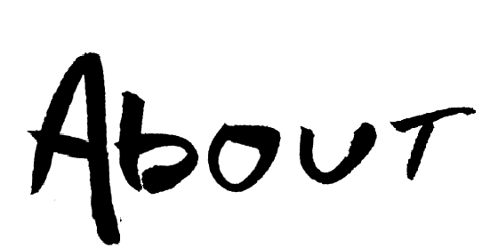
Signal Flow is an annual 4-day music festival held at Mills College.
Since its inception, Signal Flow has only grown and has become emblematic of the experimental spirit of the Music Department and the Center for Contemporary Music.
We hope to see you there this March.
 |
|
 |
 |
| Tony Gennaro * | Lee Hodel ‡ | Nayoung Jung * | Matt Robidoux * |
| Daniel Barboza * | Rodrigo Barriga * | Curt Brown * | Sean Keenan * |
| Rodolfo Córdova * | Sally Decker ** | Nick Grieneisen * | Jess Tambellini * |
| Emily Cardwell * | Hil Jaeger ** | Stasie Fomalgaut* | Benjamin Westfall * |
| Chet Bentley † | Amina Kirby ** | Maria Siino * | Tim Russell ‡‡ |
| *Littlefield Concert Hall | **Lisser Theater | †Mills Chapel | ‡Littlefield Concerthall Foyer | ‡‡Mills Student Union | |||
| Tony Gennaro * |
| Daniel Barboza * |
| Rodolfo Córdova * |
| Emily Cardwell * | Chet Bentley † |
|
| Lee Hodel ‡ |
| Rodrigo Barriga * |
| Sally Decker ** |
| Hil Jaeger ** |
| Amina Kirby ** |
| Nayoung Jung * |
| Curt Brown * |
| Nick Grieneisen * |
| Stasie Fomalgaut* |
| Maria Siino * |
| Matt Robidoux * |
| Sean Keenan * |
| Jess Tambellini * |
| Benjamin Westfall * |
| Tim Russell ‡‡ |
| *Littlefield Concert Hall | **Lisser Theater | †Mills Chapel | ‡Littlefield Concerthall Foyer | ‡‡Mills Student Union |
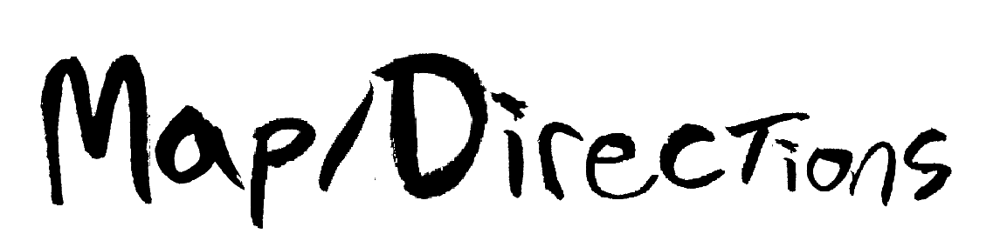
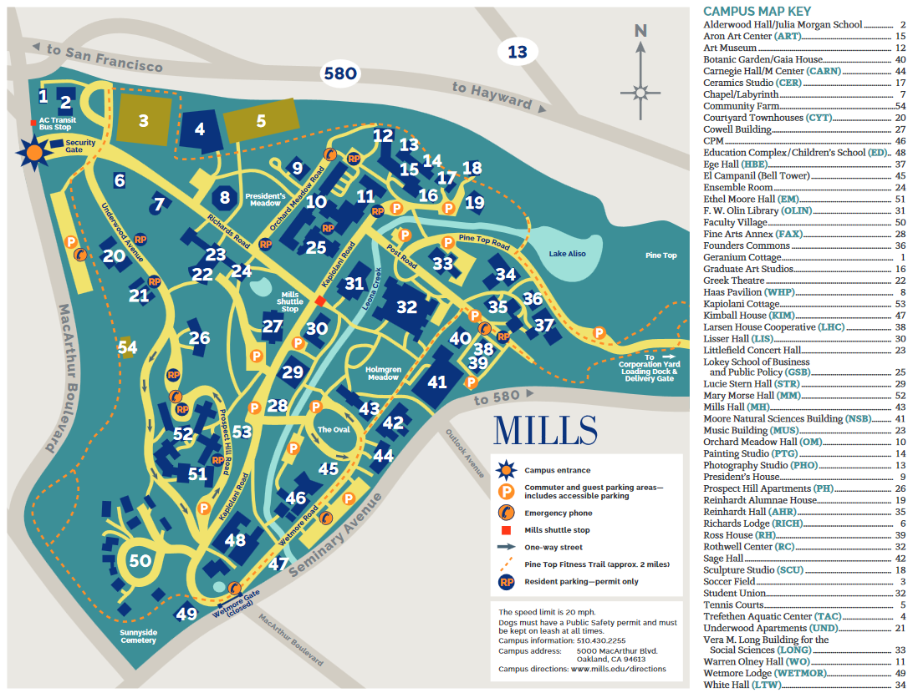